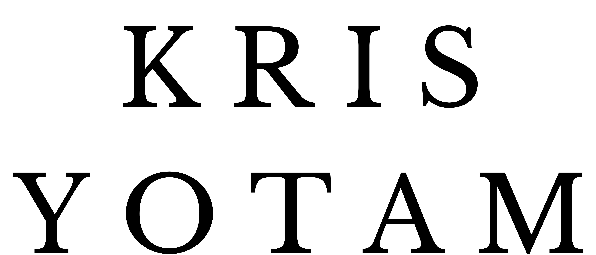
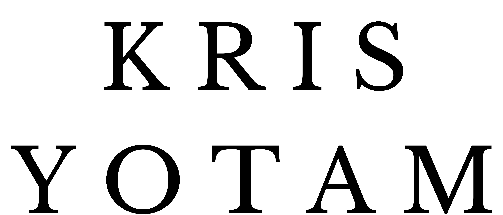

"Written word is the most important skill of the 21st century.
We write to think, to speak, to understand, to create, to connect, to inspire, to remember, to imagine, to grow.
We write in the lull of contentment, we write in the cry of uncertainty."
Kris Yotam is a seasoned copywriter, technical writer, and poet who dedicates much of his time to mastering the art of simplifying complex ideas for broad audiences.
His work spans multiple domains, from crafting compelling marketing content to producing precise technical documentation.
As a poet, Kris embraces language's creative power, using it to explore human experience in fresh, profound ways.
In addition to his writing career, Kris is an avid learner, constantly refining his ability to communicate high-level concepts in accessible terms.
With a passion for clarity and impactful communication, he continues to influence readers, learners, and professionals alike.